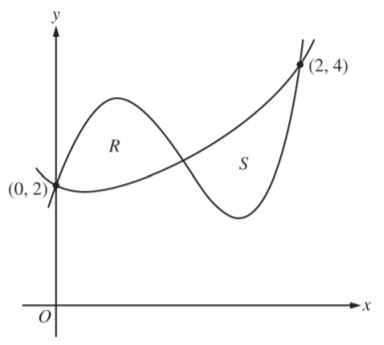
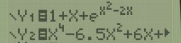

2015 AP Calculus AB. Problem # 2.
Let f and g be the functions defined by
f(x)=1+x+e
x
2
−2x
and
g(x)=x
4
−6.5x
2
+6x+2
.
Let R and S be the two regions enclosed by the graphs of f and g shown in the figure above.
1. Find the area of R (You may use a calculator)
Step 1 (
hint
):
Let (a,b)=(
,
) (5 decimal places)
submit

Let (a,b)=(1.0328319,2.4011081)
Show Step 1 (-25 pts)
Step 2 (
hint
):
Show Step 2(-25 pts)
Do you see why its
g(x)-f(x)
?
Step 3 (
hint
):
Show Step 3(-25 pts)
Do you see why its
f(x)-g(x)
?
Answer: